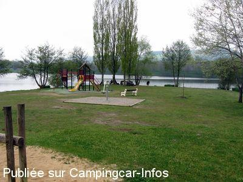

ASN = Aire de services avec stationnement nuit possible de :
SAINT ELOY LES MINES
(N° 782)
Accès/adresse :
Rue du Puy de Dome, D2144
63700 SAINT ÉLOY LES MINES
63700 SAINT ÉLOY LES MINES
Latitude : (Nord) 46.15658° Décimaux ou 46° 9′ 23′′
Longitude : (Est) 2.8361° Décimaux ou 2° 50′ 9′′
Tarif : 2016
Stationnement gratuit
Services : 2 €
Monnayeur
Type de borne : EURO-RELAIS
Services :


Autres informations :
30 emplacements
Stationnement limité 48 h
http://www.sainteloylesmines.com
Le 08/06/2013 par lelito
Le 05/10/2010 par Tblandi

Le 08/05/2009 par marc
de
DENIS YOLAINE
le 25/03/2016 :
Un bel emplacement avec tout ce qui correspond à ce que l'on attend en tant que camping-cariste pour une halte agréable gratuite avec un bel environnement .
Un bel emplacement avec tout ce qui correspond à ce que l'on attend en tant que camping-cariste pour une halte agréable gratuite avec un bel environnement .
de
stephelijul
le 27/08/2014 :
bonjour
de passage a saint eloy aire tres belle
a recomander belle ballade autour de l etang
bonjour
de passage a saint eloy aire tres belle
a recomander belle ballade autour de l etang
de
jlou
le 22/04/2014 :
un GRANG merci à cette commune
aire formidable
de plus la pêche sur le plan est abordable (pas besoin de permis national)
un GRANG merci à cette commune
aire formidable
de plus la pêche sur le plan est abordable (pas besoin de permis national)
de
herisson18
le 03/03/2014 :
bonjour,
arret sur l'aire le vendredi 28/02,une douzaine de cc,il restait encore 4 places! borne simple et fonctionnelle,wc public ouverts et propres,pas un bruit la nuit;merci à la municipalité
bonjour,
arret sur l'aire le vendredi 28/02,une douzaine de cc,il restait encore 4 places! borne simple et fonctionnelle,wc public ouverts et propres,pas un bruit la nuit;merci à la municipalité
de
Pierrot14
le 06/11/2013 :
De passage le 11 Octobre nous avons apprecié le nouvel aménagement de l'aire qui est tres pratique .
Les services sont gratuits , merci a Mr le maire pour cette réalisation
De passage le 11 Octobre nous avons apprecié le nouvel aménagement de l'aire qui est tres pratique .
Les services sont gratuits , merci a Mr le maire pour cette réalisation
de
bidet
le 25/11/2012 :
Très bel espace, nombreux emplacements, arrêt pour une nuit le 04/11/2012. La proximité de la route traversant le village, fait que cette aire est un peu bruyante, mais elle reste superbe. Merci à la commune.
Très bel espace, nombreux emplacements, arrêt pour une nuit le 04/11/2012. La proximité de la route traversant le village, fait que cette aire est un peu bruyante, mais elle reste superbe. Merci à la commune.
de
PARISOT Françoise
le 05/10/2012 :
j'ai bien aimé cette aire au bord du lac au mois d'Aout 2012, l'endroit est super, et la ville est imprégnée de la vie des mineurs, j'adore cette région des Combrailles
j'ai bien aimé cette aire au bord du lac au mois d'Aout 2012, l'endroit est super, et la ville est imprégnée de la vie des mineurs, j'adore cette région des Combrailles
de
christian
le 16/09/2012 :
Bonjour à tous
De passage fin aout 2012, je confirme que la borne sur l'aire est bien en place et fontionnelle
Bonjour à tous
De passage fin aout 2012, je confirme que la borne sur l'aire est bien en place et fontionnelle
de
jpedro
le 16/09/2012 :
Nous sommes actuellement stationnés sur le parking de l'aire, celle-ci est fonctionnelle.
Très fréquentée à cette période, mais toujours agréable.
Nous sommes actuellement stationnés sur le parking de l'aire, celle-ci est fonctionnelle.
Très fréquentée à cette période, mais toujours agréable.
de
alexandra et cyrille
le 14/06/2011 :
aire peu agréable,un parking pas très propre;par contre c'est vrai bien situé,près des commerces et du plan d'eau .Alors pour un peu plus de convivialité,vous pouvez faire un petit tour au camping juste à coté,tenu par des camping caristes super sympas,et avec en plus un tarif halte cc,de 6€50 pour deux.
aire peu agréable,un parking pas très propre;par contre c'est vrai bien situé,près des commerces et du plan d'eau .Alors pour un peu plus de convivialité,vous pouvez faire un petit tour au camping juste à coté,tenu par des camping caristes super sympas,et avec en plus un tarif halte cc,de 6€50 pour deux.
de
marc antony
le 30/04/2011 :
de passage mi-avril, nous avons trouvé une place tout près du lac,très belle vue, très propre et très calme.Il y avait des jeunes très sympathiques avec de la musique qu'ils ont éteint vers 22 heures .
Excellente adresse.
de passage mi-avril, nous avons trouvé une place tout près du lac,très belle vue, très propre et très calme.Il y avait des jeunes très sympathiques avec de la musique qu'ils ont éteint vers 22 heures .
Excellente adresse.
de
Gosset
le 28/03/2010 :
En sortant de chez notre concessionnaire de Clemont, nous nous arrêtons souvent sur cette aire, calme et agréable. Un seul soir, des jeunes sont venus faire la fête mais celà n'a pas duré.
En sortant de chez notre concessionnaire de Clemont, nous nous arrêtons souvent sur cette aire, calme et agréable. Un seul soir, des jeunes sont venus faire la fête mais celà n'a pas duré.